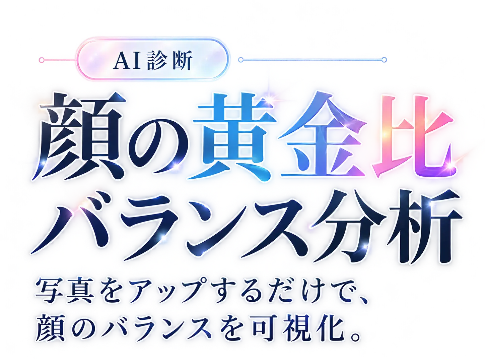
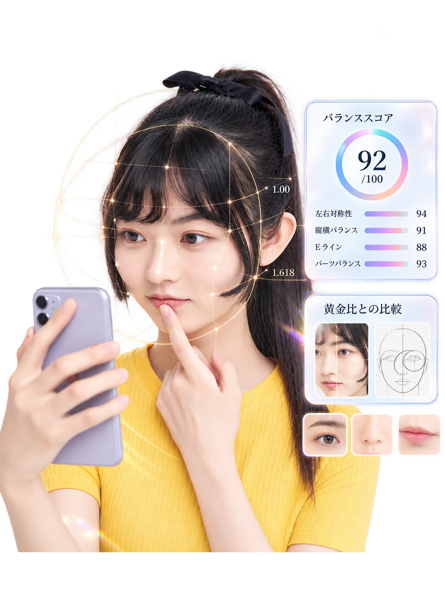
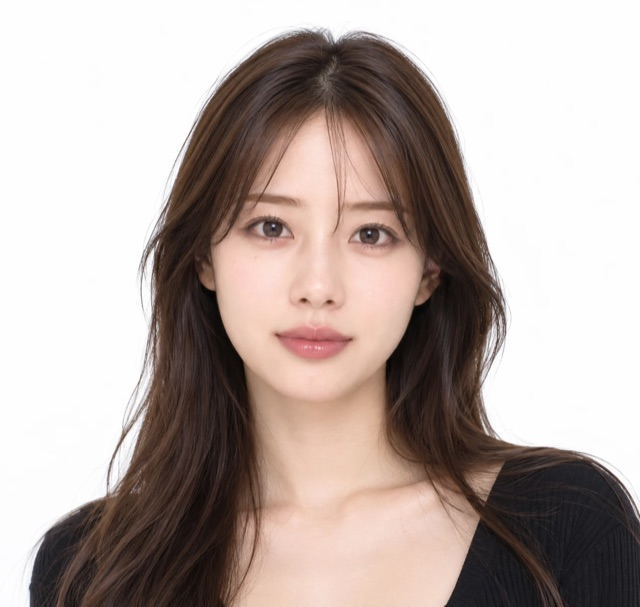

写真はこのスマホの中だけで処理。どこにも送信・保存されません。
※ 美容分野で一般的に使われる比率の目安との比較です。医学的な診断ではありません。

◯ OK診断の流れ
STEP 2 顔のパーツの位置を調整
線は自動で引いてあります合っていれば、そのまま下の「次へ」に進んでください。ずれている線があるときだけ、写真の上でその線をタップして直します。
写真や鏡で測った長さを入力してください。単位はmmでも写真アプリのpxでもOKです（すべて同じ単位で）。わからない項目は空欄で大丈夫です。
①〜④は縦の長さ、⑤は目の高さでの顔の横幅、⑪は左右の黒目の内側どうしの幅
STEP 3 診断結果
今の状態と黄金比との差、近づける方法を部位ごとに解説します。
写真の比率で分かるのは「黄金比とどれだけ差があるか」まで。差の原因が骨格・脂肪・皮膚・筋肉のどれなのかは、医師が実際に見て判断します。カウンセリングでは、今回の結果をもとに、原因と整え方の選択肢を確認できます。
LINE限定
20,000円OFF
クーポン発行中
結果をLINEに送ると、医師の解説とクーポンが届きます。
結果を送ってクーポンを受け取るLINEが開き、結果が入力された状態になります。送信を押すと届きます。
※ 対象の施術・有効期限などの条件は、LINEでご案内します。
（試作のため、自動返信はまだ設定していません）
※ 美容分野で一般的に使われる比率の目安との比較です。顔立ちの美しさは比率だけで決まるものではありません。写真の角度・距離・表情で数値は変わります。医学的な診断ではありません。
※ mmの値は、黒目の直径（約11.7mm）を基準にした写真からの推定です。
※ 掲載している美容医療は、すべて自由診療（保険適用外）です。効果・ダウンタイムには個人差があり、適応は医師の診察で判断します。